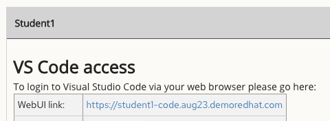
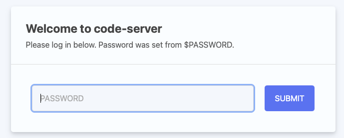
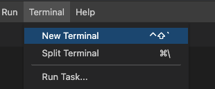
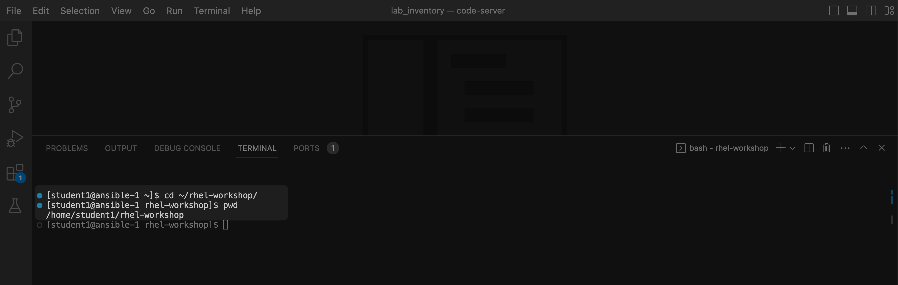
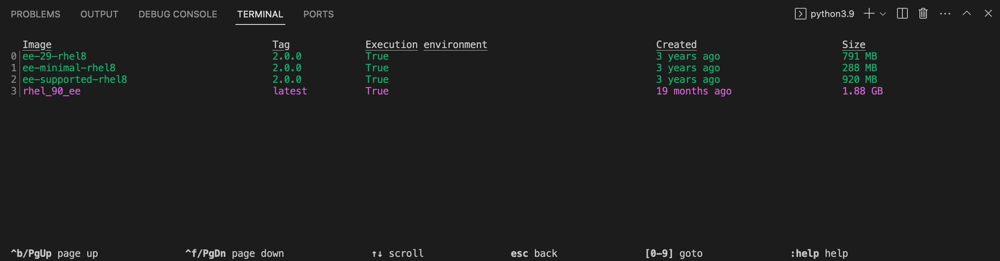
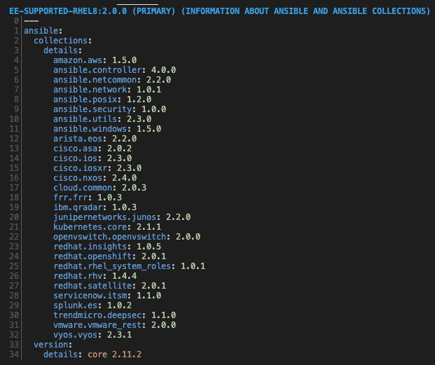

1 - Understanding the lab setup
Tips for this Lab
- Use the VS Code terminal for all commands
- Copy and paste commands from the guide.
- Do not include the terminal prompt (e.g.,
[student@ansible-1 ~]$or$) - Run commands one at a time unless specified
- If multiple commands are provided, run each one individually by pressing Enter after each line.
Table of Contents
Objective
- Understand Lab Topology: Familiarize yourself with the lab environment and access methods.
- Master Workshop Exercises: Gain proficiency in navigating and executing workshop tasks.
- Embrace Challenge Labs: Learn to apply your knowledge in practical challenge scenarios.
Guide
This workshop's initial phase focuses on the command-line utilities of the Ansible Automation Platform, such as:
- ansible-navigator - a Text-based User Interface (TUI) for running and developing Ansible content.
- ansible-core - the base executable that provides the framework, language and functions that underpin the Ansible Automation Platform, including CLI tools like
ansible,ansible-playbookandansible-doc. - Execution Environments - Pre-built container images with Red Hat supported collections.
- ansible-builder - automates the process of building Execution Environments. Not a primary focus in this workshop.
If you need more information on new Ansible Automation Platform components bookmark this landing page https://www.redhat.com/en/technologies/management/ansible
Your Lab Environment
You'll work in a pre-configured environment with the following hosts:
| Role | Inventory name |
|---|---|
| Ansible Control Host | ansible-1 |
| Managed Host 1 | node1 |
| Managed Host 2 | node2 |
| Managed Host 3 | node3 |
Step 1 - Access the Environment
We recommend using Visual Studio Code for this workshop for its integrated file browser, syntax-highlighting editor, and in-browser terminal. Direct SSH access is also available.
- Connect to Visual Studio Code via the Workshop launch page.
Warning
Use the URL provided on your workshop launch page. Each participant will have a unique URL. The image below shows an example.

- Enter the provided password to login.

Step 2 - Using the Terminal
- Open a terminal in Visual Studio Code:

- Navigate to the
rhel-workshopdirectory on the Ansible control node terminal.
Run the following commands:
1 2 | |
Example Output:
1 2 3 | |
~: shortcut for the home directory/home/studentcd: command to change directoriespwd: prints the current working directory's full path.

Step 3 - Examining Execution Environments
- Run
ansible-navigator imagesto view configured Execution Environments. - Use the corresponding number to investigate an EE, e.g. pressing 2 to open
ee-supported-rhel8
Run the following commands:
1 | |

Note: The output you see might differ from the above output

Selecting 2 for Ansible version and collections will show us all Ansible Collections installed on that particular EE, and the version of ansible-core:

Step 4 - Examining the ansible-navigator configuration
- View the contents of
~/.ansible-navigator.ymlusing Visual Studio Code or thecatcommand.
Run the following commands:
1 | |
Example Output:
1 2 3 4 5 6 7 8 9 10 11 12 13 14 15 16 17 | |
-
Note the following parameters within the
ansible-navigator.ymlfile: -
inventories: shows the location of the ansible inventory being used execution-environment: where the default execution environment is set
For a full listing of every configurable knob checkout the documentation